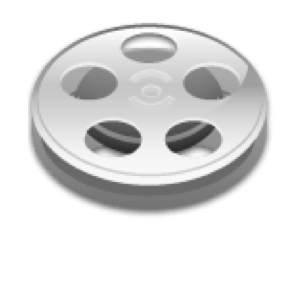
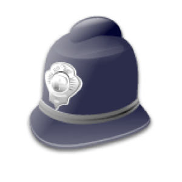
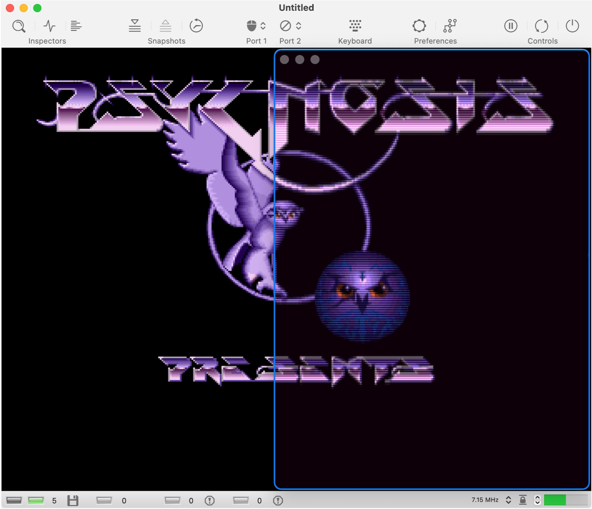
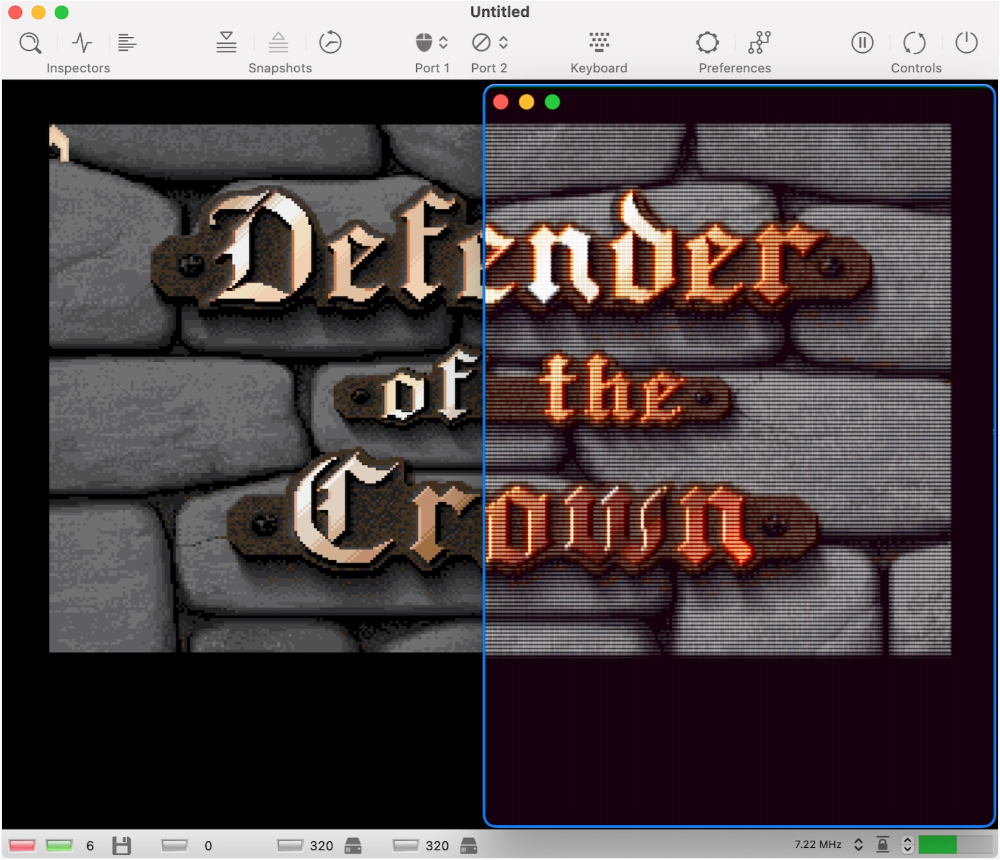
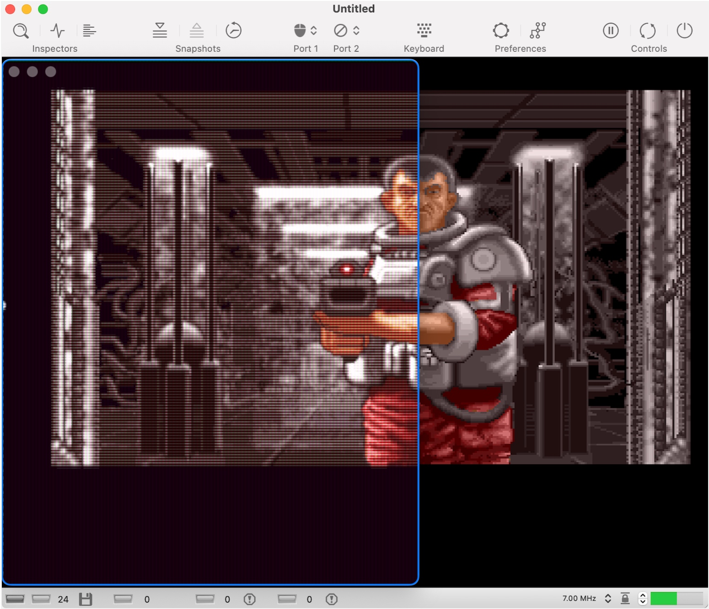
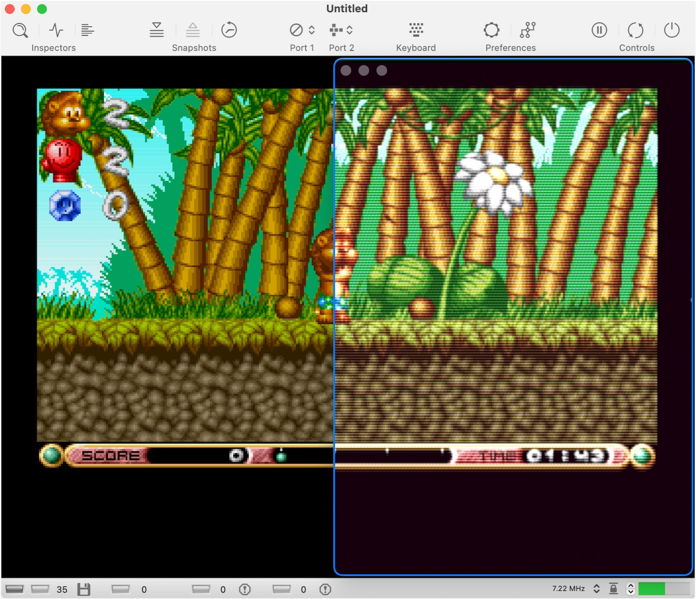
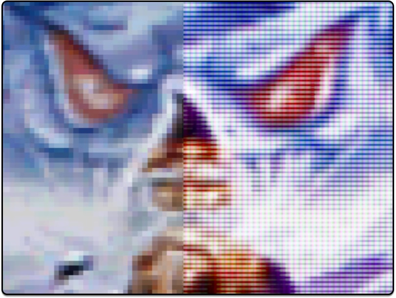
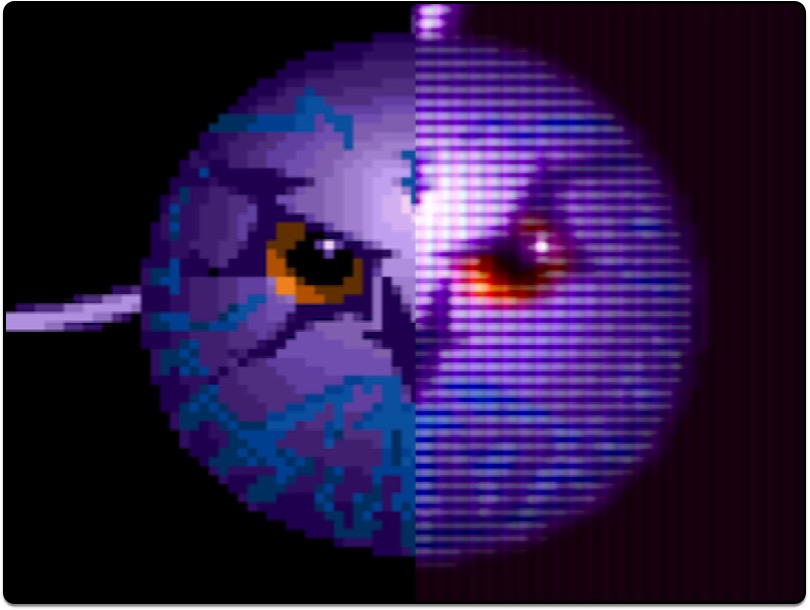
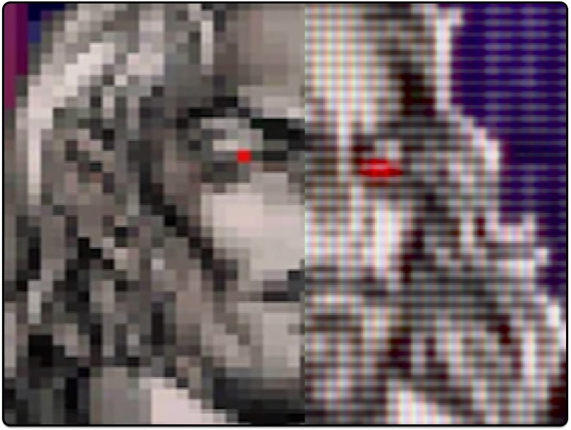
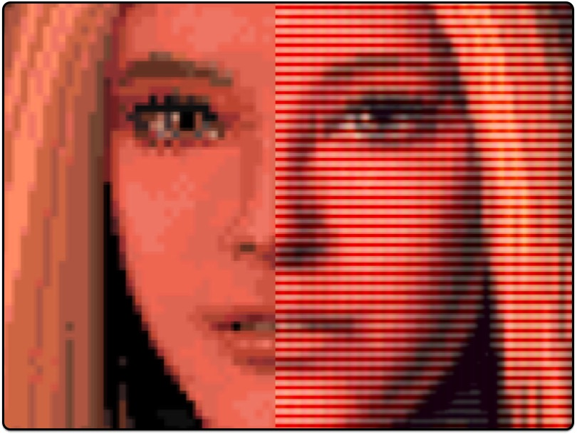

Say Hello to RetroVisor
RetroVisor is a macOS app that applies real-time, shader-based visual effects to any active window on your desktop. It gives modern applications, such as emulators or media players, the nostalgic appearance of vintage CRT displays. Inspired by ShaderGlass on Windows, RetroVisor achieves this effect without modifying the original software in any way.
RetroVisor leverages Apple’s ScreenCaptureKit to record screen content in real-time. The captured image is sent through a GPU pipeline and drawn back onto the screen, perfectly aligned with the original window. This gives the effect of a transparent overlay applying visual enhancements without altering the source application, enabling seamless and immersive retro visuals.
When RetroVisor starts, a movable effect window appears. Simply position it over any running application and double-click to freeze it in place. The window will then display the live content with shader effects, ignoring user input. Use the menu bar or app icon to unfreeze it. Zooming is supported via trackpad gestures or menu options.

RetroVisor lets you record the area under the effect window in real time. Once the effect window is positioned, start recording via the menu bar. Choose from multiple video formats and customize options for both video and audio in the Settings panel. The recording captures all live content with shader effects applied, exactly as displayed in the effect window.

RetroVisor requires screen recording permission to operate. To use the tool, you must grant the necessary permission in System Settings. Without it, macOS will block the application.
RetroVisor on top of vAmiga




Unleash the power of your GPU with the new Sankara shader



